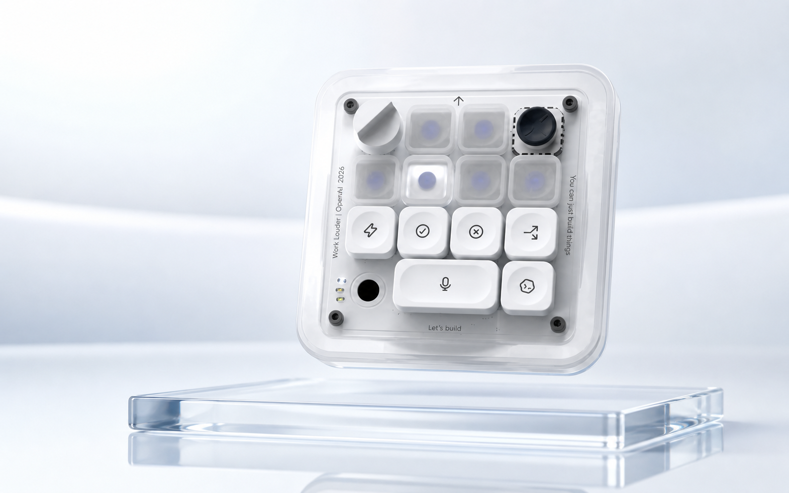
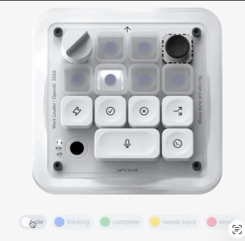

Focus
Six threads.
One mental model.
Jump between implementation, review, debugging, and documentation without rebuilding context.
Agent control, refined.
One quiet surface for Codex. Switch sessions, approve work, speak a prompt, and stay in flow.
Designed for Apple silicon · Local-first voice

Built around attention
Agent Micro stays compact on your desktop and brings the actions that matter forward. Six sessions remain visible without turning your workspace into a control room.

One surface. Every move.
Common actions stay one gesture away, while the full terminal remains exactly where you left it.
Focus
Jump between implementation, review, debugging, and documentation without rebuilding context.
Voice
Hold to speak. Whisper transcribes on your Mac and downloads only when you first need it.
Command
Respond to permission prompts, branch useful sessions, and send your next instruction without hunting for a window.
A role for every agent
Give each slot its own role, model, workspace, tools, and instructions. Global and project rules layer cleanly, so every session starts aligned.
Build your agent lineupKeep changes focused. Verify the interface at every breakpoint. Preserve local-first behavior.
Small by design
Codex and Whisper are detected on your Mac first. Missing components download on demand, cached assets are reused, and your voice stays local.
Ready when you are
A focused companion for people who build with AI every day.